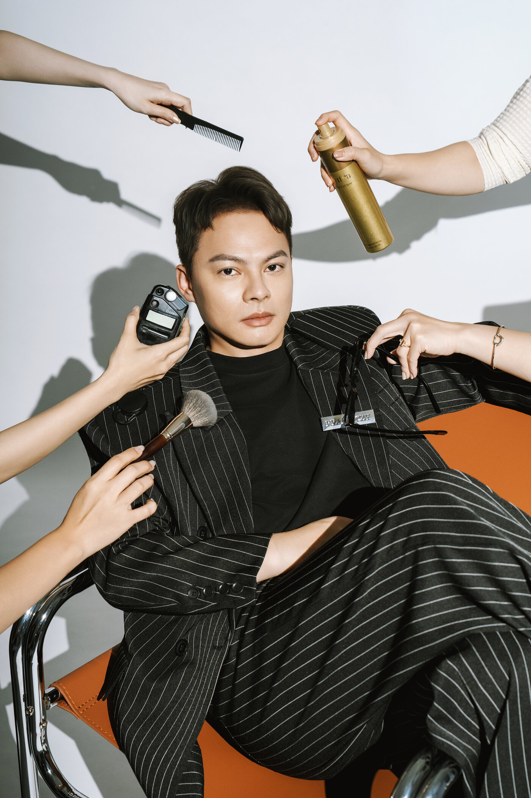

個人色彩診斷可以幫你挑服裝、彩妝與配色，但分類結果是整理方向的工具，不是唯一答案。骨架分析也一樣：它能看出身形和服裝剪裁的關係，但單靠分類決定不了完整的穿搭。
做完個人色彩診斷之後，你可能會得到一個分類名稱：暖秋、冷夏，或其他更細的季型。
這些分類的好處，是把「什麼顏色比較適合自己」整理成容易理解的語言；骨架分析則會從身形結構與比例，提供服裝版型、長度與材質的參考。
對造型來說，這些資訊都有用。但如果問題變成：
- 明天演講要穿什麼？
- 剛升主管，服裝要不要調整？
- 要拍形象照，應該穿得多正式？
- 同一個適合色，藏青和天藍該選哪一個？
這時候只知道季型或骨架分類，就還不夠。
這篇會分開談三件事：顏色怎麼影響膚色的觀感、不同分類系統為什麼會給出不同結果，以及實際穿衣服時還要一起看什麼。
在 CHUN.EN 的形象規劃裡，色彩方向、身形比例與服裝輪廓都會一起看。如果你已經在別處做過色彩或骨架分析，也可以把結果帶來，和實際試穿、工作角色與使用場合一起對照。
個人色彩與骨架分析，可以提供哪些參考？
個人色彩分析整理的是配色方向，骨架分析提供的是身形與服裝輪廓的參考。兩者都能幫你縮小選擇範圍，但分類結果本身決定不了某個場合該穿什麼。
Carole Jackson 在 1980 年出版《Color Me Beautiful》，讓春、夏、秋、冬四季型的個人色彩分析進入大眾市場。後來市場也出現更細的分類方式。
日本常見的骨架分析，則從身體結構、比例與質感等特徵，整理服裝版型與材質方向。
這兩類工具處理的問題不同，但共同點是：把原本很抽象的「適不適合」，整理成較容易使用的造型線索。
服裝顏色會影響臉部膚色的觀感嗎？
會。Zhang 等人 2025 年在《Coloration Technology》發表的研究，用 22 件不同色相、彩度與明度的素色上衣，測試服裝顏色如何影響人們對臉部膚色白皙程度的感受（原始論文連結）。
結果顯示，在該研究條件下，明度較低的服裝會讓臉部看起來更白皙。
這項研究支持的是「服裝顏色會改變膚色的視覺感受」，不是在驗證四季型、12 型或 16 型哪一套分類比較準。
身形比例、肩線、身體厚薄與材質怎麼影響衣服穿在本人身上的效果，則是 CHUN.EN 在實際試穿時會一起觀察的項目，屬於造型工作的實務判斷，不是上面這份研究的結論。
不同個人色彩系統，可能得到不同結果
同一個人拿去不同的個人色彩系統，分類結果不一定相同。這是分類方法之間的差異，和「顏色會不會影響膚色觀感」是兩個問題。
Cha、Bang 與 Kim 2012 年比較英國、日本、韓國與德國四套個人色彩系統。以 20 多歲女性的判定結果來看，四套系統在各季型的分類有顯著差異；兩兩比較的一致率，最低是韓國與日本系統的 64.5%，最高是英國與德國系統的 83%（期刊頁面）。
這個結果比較適合這樣理解：
個人色彩分類是一種整理色彩方向的方法，但不同系統的判定邏輯並不完全相同。
所以如果你曾經在不同地方測出不同季型，不需要立刻把其中一個結果判定成「錯」。
更實際的做法，是回到試穿：哪些顏色真的讓膚色、五官與整體服裝更協調，再把分類當成整理方向的工具。
色彩與骨架之外，還要看場合與角色
職業形象的穿搭，除了色彩與身形，也要看工作角色、使用場合與正式程度。同一件「適合你的衣服」，放到不同情境裡，使用方式也可能不同。
| 問題 | 色彩／身形分析可以提供什麼 | 還要一起看什麼 |
|---|---|---|
| 哪些顏色放在臉附近較協調 | 色彩方向參考 | 實際試穿、現場光線 |
| 哪種版型、長度較適合 | 身形與輪廓參考 | 材質、尺寸、實際穿著 |
| 明天演講要穿什麼 | 提供顏色與版型方向 | 場合、角色、正式程度 |
| 升主管後要不要調整穿著 | 原有診斷仍可參考 | 新角色與工作內容 |
例如，一個人原本適合的藍色，不會因為升主管就突然失效。真正可能改變的是：
- 選藏青還是天藍
- 搭針織還是西裝
- 要不要增加結構感
- 在簡報、客戶會議或日常工作裡怎麼組合
所以色彩與身形分析可以繼續使用，只是工作角色與場合變化時，穿法也要一起調整。
CHUN.EN 怎麼使用這些觀察？
如果你已經有個人色彩或骨架分析結果，CHUN.EN 會把它保留作為穿搭參考之一。在 À Voir 的形象規劃裡，還會一起確認：
- 現在的工作與角色
- 平常真正會出現的場合
- 已有衣櫥
- 色彩方向
- 身形比例與服裝輪廓
- 需要的正式程度
差別可以落到很具體的選擇。例如，同樣在適合的藍色範圍裡，最後選藏青還是天藍，不只看色彩本身，也要看你當天去哪裡、搭什麼，以及希望整體呈現什麼狀態。
這也對應〈形象顧問、造型師、攝影師差在哪？〉談的分工：色彩與身形觀察提供造型參考，形象顧問還會一起處理角色、場合與後續使用。

做完色彩診斷之後，還可以再問一題
色卡不需要收起來。如果分類結果讓你更容易挑顏色、整理衣櫥，它就已經有實際用途。
下一步可以多問一題：
這個顏色和版型，放進我現在的工作與生活裡，要怎麼穿？
把色彩、身形、角色與場合放在一起看，分類結果才更容易變成真的穿著選擇。